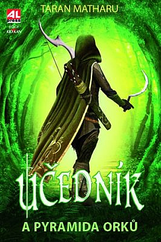

Hraničářův učeň
Popisuje život Willa, chlapce, který se stal hraničářským učněm, a poté i hraničářem a jeho budoucí učněnky Madelyn
Divotvůrce
Série pojednává o osudu Kelena z rodu Ke který musel opustit domov a vydat se na cetu Argosana.

Assassin's creed
První dvě knihy jsou o příběhu Ezia Auditoreho a jeho bratrstvu a třetí kniha popisuje osud Altaïra Ibn-La'Ahada.
První díl

Druhý díl

Třetí díl
Učedník
Trilogie je o chudém klukovi, který ovládne malého démona, ten však není tak bezmocný jako je malý.
Země příběhů
Pětidílná série o dvojčatech ktaré jsou oba napůl Kouzelná víla.